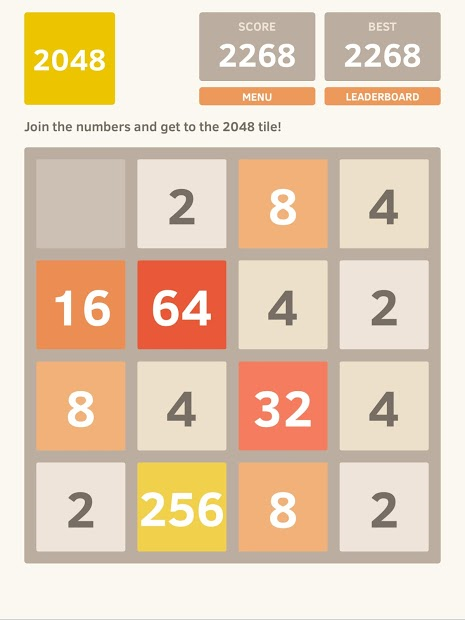

Project Idea
My ideal job is to become a game creator, so I am interested in AI and gaming overall. AI or bot has
always played a vital part in early video game days. Moreover, with the rising of data science and
the need for AI in the industry, many companies are looking for developers with some experience in
this field. Because of that, I want to develop a bot that can win the game “2048”. The bot (or AI)
will not be too complicated to develop since the rule are simple, and it will be a good beginner AI
project. Furthermore, this project will help me gain experience and help me learn the life cycle of
a project.

The goal of the game is to add the number up to 2048 by sliding the tiles with the same
value together. And each time the player swipe to slide, a new tile will appear in one of the empty
16 spaces. The AI that I am going to develop will be able to win the game (get to 2048) in a certain
amount of time by calculating its next move. There are several ways we can achieve this goal.
- We let the computer enumerate random move and choose the path that has the highest score.
- We can use an algorithm name minimax (usually used in chess games).
- We can also use a variation of the minimax algorithm call expectimax algorithm to make the bot.
For the first method, it is quite straight forward, but the computer memories are limited. We could
store the data of each move iteration as nodes in a tree structure and choose the path that leads to
the highest score. The bot will try to move upward (1 node) than downward (1 node) then record this
its total score. Similarly, the bot will try to move upward then left (or right) again then record
the path score. After the bot finished all the possible moves (depth limited by the user), it will
then choose the path with the highest score and follow it until the game is finish. However, this
method has some problems, like the number of memories that will be used when the bot will use to
store the game board state. Moreover, this method would not guarantee a 100% success rate since it
imitates human logic without any optimal decision making.
For the second and third solution, from my current understanding, the algorithm tries all possible
moves, then backtracks and make the decision. The algorithm will store all the states of the game
board in the tree data structure as a node. Each node will have a calculated score base on the rule
provided by the developer. The goal of the algorithm is to choose an optimal move while minimizing
the possible loss for the player by comparing the score in each node. What differs from the first
method is that this algorithm is a well-developed and is based on a strategy in decision theory.
Moreover, this kind of algorithm has used in many two-players turn base games before such as
tic-tac-toe and chess.
For implementing the bot, I would first need to be able to run the game. The software I will be
using to run the game (or recreate it) is an IDE or Unity. Since the game is quite old at this
point, there should be some game clone on GitHub. Moreover, because the Minimax algorithm has been
developed for a long time, there are many documentations about the algorithm on the internet like
geeksforgeeks.org.
For the skills requirement, I would also need some knowledge about tree structure and how to
traverse them with a different algorithm. It would take some time to learn all the required
knowledge, but it could be found on the internet or in some later RMIT courses. Furthermore, to
develop and understand the code of the game and implement the bot, I would also need to learn about
object-oriented programming.
The main outcome of this project is that I would gain some knowledge of how to build a functioning
AI and how to implement it. The project is successful when the bot can win the game with the success
rate over (or at least 90%) of the time it is active. One potential function for the bot is the hint
function for this game. Moreover, the Minimax algorithm is versatile and can be easily modify for
other purposes
from engineering to business.